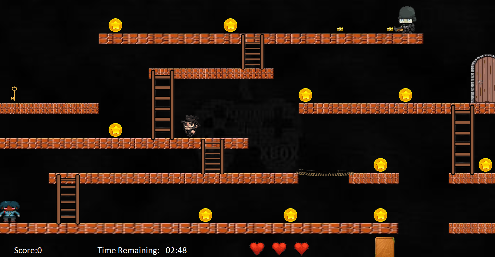

Projects Description
Funded by the USAID Higher Education Scholarship (HES) program, our project aimed to promote afforestation awareness and encourage sustainable agricultural practices among local farmers. As a team of six HES scholars, we were entrusted with a budget of $1,000 per member, which we strategically utilized to maximize impact. Our initiative included hosting a conference and awareness campaign in Chouf and Akkar, engaging 50 farmers from each region. These events featured expert-led discussions, practical demonstrations on sustainable farming techniques, and afforestation strategies, facilitated by a professional agricultural engineer. To support the farmers in implementing these practices, we distributed essential agricultural hand tools and provided hands-on training on their effective use. It is important to note that the HES management imposed specific restrictions on the types of projects we could conduct and the equipment we were allowed to purchase. We carefully adhered to these guidelines throughout the project, ensuring full compliance while achieving our objectives effectively.
Project Images
 Lode Runner Project Chicken in Space Invader Project Blocks and Bombs Project
Blocks and Bombs Project